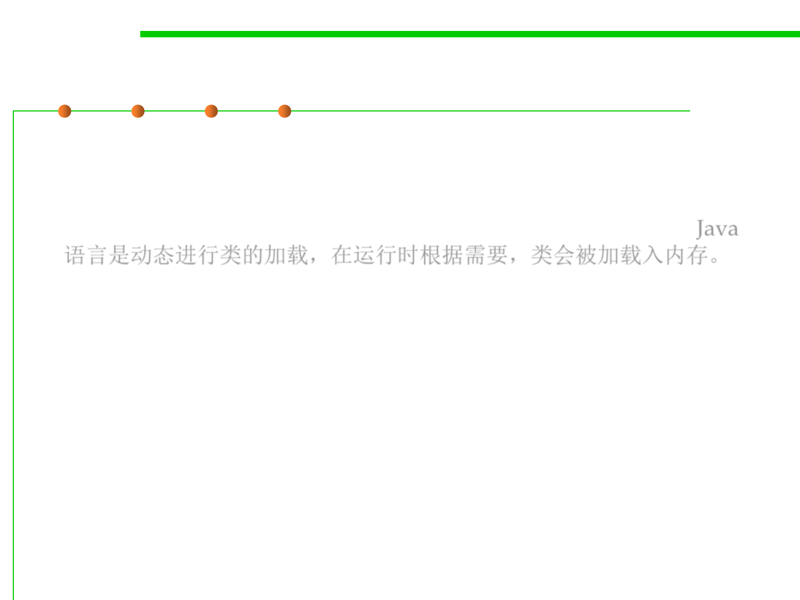

2.2 Process, Systems, and Tools of Software Construction
Executable Programs of Java
▪ Java programming is dynamic class loading. No build-time link step
is required to produce an executable program. Instead, Java classes
are individually loaded into memory when a running program needs
them. There’s no single executable program image to be loaded. Java
语言是动态进行类的加载，在运行时根据需要，类会被加载入内存。
▪ Java programs are simply a collection of dynamic libraries,
although individual classes are loaded one at a time instead of as
part of much larger shared libraries.
▪ A Java program requires two things to execute:
– The JVM must be provided with the name of a class that contains a main
method. This is used as the starting point for execution.
– The JVM must also be provided with a class path, which is used to
identify where additional classes can be located.